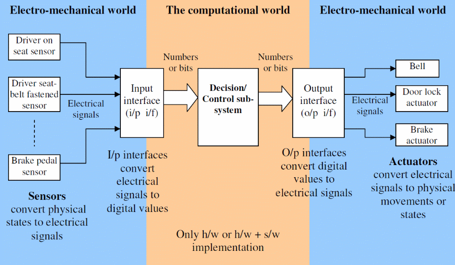

This lab extends lab 3. Please be patient to read full instructions.
This is a team project (up to two students).
Assume you are hired by Ford Motor Company to develop the embedded software for their new model of cars. This software executes on the main computer that sits inside the car. Your manager wrote down the “Software Requirement Specification (SRS)” document and gave it to you. Based on the “requirements” listed in this document you have to develop a C program that materializes these requirements/specifications. Given below is a portion of the SRS document which includes the schematic of the car’s electronics and computer systems:

The sensors convert the physical states (pressure induced by the driver on the seat when he is seating on it, etc.) and mechanical motions (driver pressing the brake pedal) to electrical signals (voltage, current). The input interface sub-system (commonly denoted as “i/p i/f”, “i/p” for input, “i/f” for interface) converts electrical signal into digital form (number, bits etc.). The decision/control sub-system is the main functional block which provides the intelligence to the car so that it can take the right action based on the given situation. The decision logic provides digital output (numbers, bits), which is converted back to electrical signals by the Output interface (o/p i/f). These electrical signals are used to activate the electro-mechanical actuators (motors, electro-magnets etc.). For this particular lab class, your job is to design the decision control logic. You will design the i/p i/f and o/p i/f sub-systems.
Available sensors -
Each hardware sensor provides a “high” (1) or “low” (0) output. The input interface sub-system sets the value of the corresponding global integer variable to the respective value. The decision/control logic sub-system will read this integer to take the right decision. It is assumed that this integer is available for C programming. The i/p i/f sub-system keeps monitoring the sensor hardware outputs and takes action (changes value of the integer variable) as soon as the sensor output state changes.
1. DOS – driver on seat. This sensor indicates whether a driver is present. This sensor provides logical “high” (1) as output when a person is sitting on the driver’s seat and “low” (0) if he is not on the seat.
2. DSBF – driver seat belt fastened. This sensor indicates whether the driver seat belt is fastened or not. The sensor hardware provides “high” when driver’s seat belt is fastened, “low” otherwise. The corresponding integer variable that reflects the physical states inside the computer and programming world is “driver_seat_belt_fastened”. The i/p i/f sub-system sets this integer to 1 when DSBF output is high and to 0 when DSBF is low, and the decision/control sub-system code reads/uses it.
3. ER – engine running. This sensor indicates whether engine is running or not. It provides “true” when engine is running, false otherwise. The corresponding integer variable to read and use is “engine_running”.
4. DC- doors closed. Indicates whether all doors are closed or not. The corresponding integer is “doors_closed”.
5. KIC – key in car. Indicates that the keys are still inside the key hole, the corresponding integer variable is “key_in_car”.
6. DLC – door lock lever. This indicates whether the door lock lever is closed or not. To close the electronic door locks the driver has to close this door lock lever. When the car’s computer finds that door lock lever is closed it checks all other variables to assess the situation and finally decides whether to activate the electronic door locks to lock the doors or not. For example if the car keys are still inside but the driver is not on seat (has gone out of car) then the doors should never be locked even though the driver has closed the door lock lever.
7. BP – brake pedal. This indicates that the brake pedal is pressed by the driver.
8. CM – car moving. This sensor indicates the car is moving and atleast one of its wheels is turning. The corresponding integer variable “car_moving” has value 1 when the car is moving, and has value 0 if the car is not moving.
Available actuators -
1. BELL - A beeper/chime that sounds/plays to alert the driver of any abnormal/hazardous situation. A global integer variable named “bell” is provided in the computer, if your code that implements the decision/control sub-system sets this variable to 1, then the output interface sub-system will read this value and turn the on the voltage on the electrical wire that feeds the beeper/chime. As a result the beeper/chime will start beeping. The beeper will stop when the decision/control subsystem code sets the value of “bell” to 0, because then the o/p i/f will turn down the electrical voltage feeding the beeper hence it will stop. The o/p i/f keeps on monitoring the integer variable and takes action (change the voltage) when the integer changes its value.
2. DLA – door lock actuator. This actuator locks the doors. A corresponding global integer variable named “door_lock” is provided in the computer, if you set this integer to 1 all the doors are locked, it unlocks all doors when you set the value of “door_lock” to 0.
3. BA – brake actuator. This actuator will actually activate the disk brakes in each of the four wheels if the global integer variable “brake” is set to 1. The brake will be released when this variable is set to 0 by the code that implements the decision/control logic sub-system.
Requirements -
1. The BELL should chime/sound when the driver starts the engine without fastening his seatbelt.
2. The BELL should sound when the driver starts the car without closing all the doors.
3. The BELL should be off as soon as the conditions change to normal.
4. The doors should not lock when the driver has got out of the car but the keys are still inside the engine, even though the driver has closed the door lock lever. Note: If the driver is on the seat and requests the doors to be locked, the doors must lock.
5. The brake should be engaged when the driver presses the brake pedal. Brakes should disengage when the brake pedal is released. The brake should engage only when the car is moving, when the car is stationary the brake should not unnecessarily engage to reduce mechanical wear and tear of the brake’s hydraulic system.
Activities to do -
a) For each requirement, separately provide the Boolean expressions that you decided to use.
b) Create a single combined truth table with all the available sensor inputs and actuator outputs for all the five requirements together. Some of the truth table entries will be don’t-care states (represented by an X) instead of true or false. For this sub-problem assume that these five requirements together constitute a complete system.
c) Write a C program using the Boolean logic concepts and tools learnt in class to materialize these five requirements. Use if-then-else structure to do this. Submit the C code and your executable. A basic code framework (file name “lab5.c”) for a general control system has been provided. This is available in the lab files that you downloaded. Use this code to learn how to develop C program for a real-life control system.
Submit your version of lab5.c with the code that you wrote, along with sample input and output. For those who choose to use file I/O instead of console - you should copy the input and output traces for submission. Results, Snapshots and Codes are inserted into Lab Report. You can hand in before the deadline.